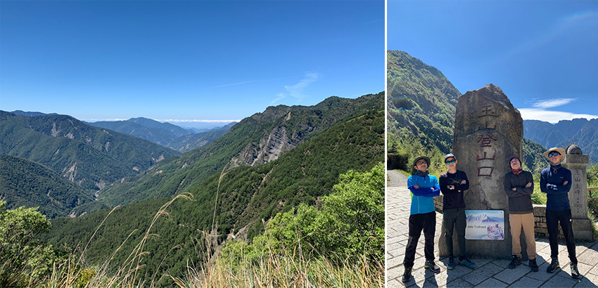
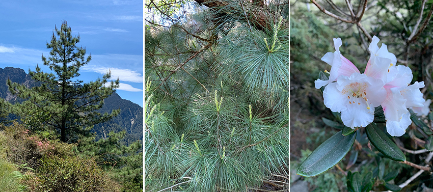
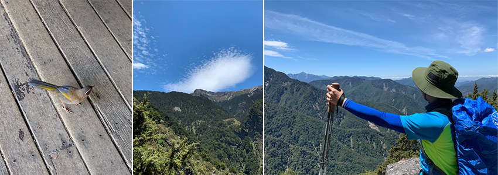
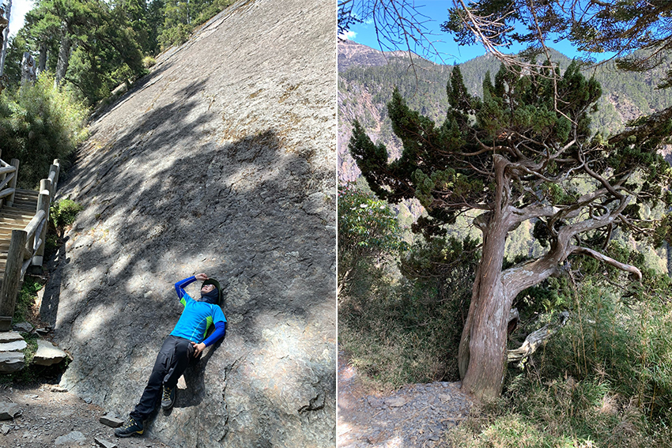
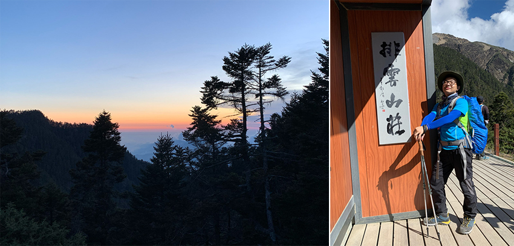
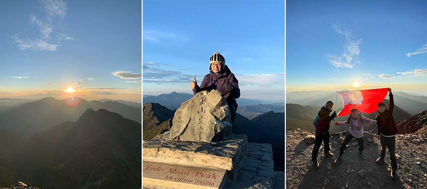

2021年三月中，趁著新冠肺炎疫情尚未嚴重爆發，和同事、弟弟、表弟一起團報野訓玉山主峰登山團。因早耳聞登玉山難的不是路途，而是抽中排雲山莊，故大家只是互相提醒假日有空記得運動鍛鍊一下，殊不知兩個禮拜後旅行社通知中籤，一個月後登主峰！一陣錯愕下，大家才趕緊在假日鍛鍊並相約買齊登山裝備。
五月，登玉山的日子終於來臨！前一晚搭著接駁車到南投東埔住宿，隔天清晨五點起床，興奮的心情夾帶著些微緊張，先到玉山國家公園管理處登錄入山許可證，接著不免俗的一定要在登山口來張合照，再和同事帶著驕傲的表情，正式踏上人生的第一座百岳！
|  |
第一天行程
往排雲山莊的路上沿途欣賞著高山美景，萬里晴空一望無際，看著遠方綿延的山脈和雲海，彷彿來到了世外桃源。且海拔兩千六百多公尺的環境就像天然的冰箱，即使烈日當頭也不覺得心情煩躁，反而涼風徐徐吹拂讓人心曠神怡，抖擻精神一路向上！
美景 : 台灣二葉松與玉山杜鵑
沿途嚮導介紹著玉山特色，到處可見的台灣二葉松，枝條末端松針兩針一束，非常好辨認。另外還有高山特有種玉山杜鵑，粉白紅顏色相間為高山點綴出鮮豔的景色。
|  |
美景 : 金翼白眉與遠眺玉山主峰
到山莊前一共有八十一座橋，兩座涼亭，正當嚮導邊講解邊倒數橋的數量的時候，不知不覺已經到達了今天中午的休息地點白木林涼亭，大夥趕緊拿出能量飲和午餐補充體力。忽然間從樹梢上飛下來一隻鳥，還不怕人的跳躍靠近，聽嚮導介紹原來是臺灣特有種金翼白眉，不過欣賞之餘，還是要再次呼籲禁止餵食，避免野生動物失去求生本能，而且胡亂餵食可是會被玉山管理處開罰！
另外，既然都已經辛苦的跋山來到這裡，怎能不為自己留下帥氣的背影呢？藍天、白雲、聳峻的玉山山脈，這優美的景色令人流連忘返，還可以提前遠眺這趟旅行的目標，玉山主峰！
|  |
美景 : 玉山大峭壁與玉山圓柏
走著走著，眼前左側突然出現了一整面高聳的岩壁，原來是知名景點玉山大峭壁到了，上面還遺留著海洋生物化石及波紋狀痕跡，令人嘆為觀止。接著往上爬，另一個台灣高山特有種出現了，玉山圓柏！只生長在海拔三千四百公尺以上，因終年低溫生長緩慢，身價可是不斐呢。另外，它的出現也代表了今天的目的地近在咫尺！
|  |
第一天目的地 : 排雲山莊
爬了8.5公里，終於到達了今天的目的地排雲山莊，久聞其名不如一見，為多少山友提供遮風避雨休憩的地方，令人尊敬！爬的再累，拍照還是要露出驕傲的表情。另外，山上傍晚的晚霞也令人駐足留戀，印證了夕陽無限好，只是近黃昏。
|  |
人生的第一座百岳 : 玉山主峰
來到玉山要做什麼呢？還用問，當然是攻頂看日出阿！再累，清晨一點也要起床準備！歷經了三個半小時的摸黑路程，皇天不負苦心人，終於在五點半從遠方露出了曙光，親眼見證了台灣最高峰玉山山頂太陽昇起的那一刻，為人生立下了一個里程碑！就算是現在回想起來，還是會起雞皮疙瘩，嘴角情不自禁的上揚！
|  |
旅途終點
一轉眼，兩天兩夜的行程即將到達終點，爬山不像其他運動，過了終點就結束。山頂的風景固然美好，但當下其實你只完成了一半，還有整整一半的下山行程等著完成，而且山頂天氣千變萬化，能不能出大景都要看老天爺臉色。不過身體雖然疲憊，但能達成人生的里程碑，還是值得留念。最後，感謝一路陪伴扶持的同事與家人，能親身攀爬完成台灣的第一高峰，我想這種回憶一輩子都忘不了，再累，都值得！